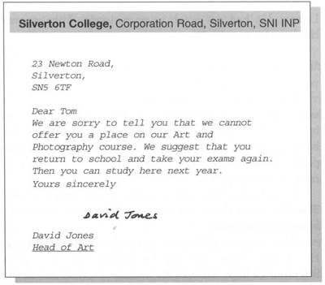
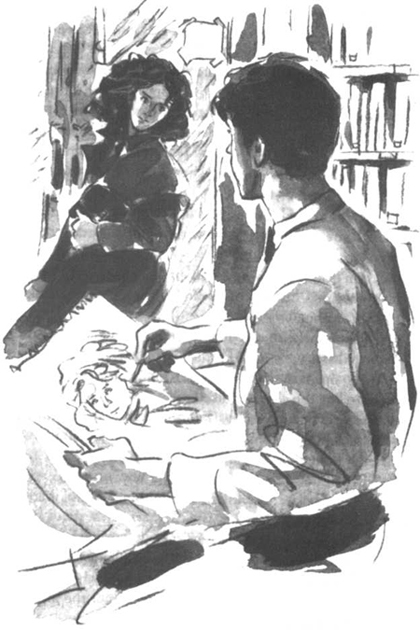

Listen to Part 1:
Ông Cutter rất tức giận.
Ông nói: "Kết quả thi của con thật tệ, Tom."
Tom đáp: "Con đã đỗ kỳ thi mỹ thuật, điểm A."
Ông chỉ trích: "Nhưng con đã trượt các kỳ thi lịch sử, tiếng Anh, sinh học, toán học, vật lý và hóa học. Điểm F."
Tom phân trần: "Bố không hiểu đâu, con không thích những môn đó. Con muốn trở thành họa sĩ. Con sẽ học mỹ thuật và nhiếp ảnh tại trường đại học Silverton."
Nhưng một bức thư từ trường đại học Silverton chứa đựng tin không vui.

Và vấn đề là - Tom ghét học. Cậu không muốn quay lại đó.
Ông Cutter bảo: "Con sẽ phải kiếm việc làm."
Tom rất buồn.
Listen to Part 2:
Cậu nói: "Con không muốn kiếm việc làm. Con mới có mười bảy tuổi. Con muốn vẽ và chụp ảnh. Một ngày nào đó, con sẽ kiếm được nhiều tiền nhưng —"
Ông Cutter quát: "Đừng có ngốc thế! Khi còn trẻ, con không biết mình muốn gì! Vẽ vời là dành cho lũ trẻ con. Con phải tìm việc làm hoặc quay lại trường học."
Tom đã viết thư cho nhiều công ty. Cậu hỏi xin việc từng công ty một. Cậu điền bốn mươi đơn xin việc và nhận lại bốn mươi lá thư từ chối. Không có việc làm nào dành cho Tom.
Rồi một ngày nọ, cậu nhận được một lá thư từ Thư viện công cộng Silverton. Cậu đã có một công việc trợ lý. Họ muốn cậu bắt đầu ngay.
Ông Cutter nói: "Tuyệt lắm. Đây là một cơ hội lớn. Con sẽ bắt đầu làm trợ lý. Nhưng hai mươi năm nữa, con có thể trở thành thư viện trưởng."
Công việc mới của Tom rất dễ dàng. Thư viện công cộng Silverton nhỏ và không quá bận rộn. Thư viện mở cửa cả ngày, nhưng không có nhiều người đến đó. Họ đến để mượn sách về nhà đọc. Thư viện cũng có nhiều tờ báo. Một số người đến mỗi ngày để đọc báo.
Tom kiểm tra tên sách mà mọi người chọn. Sau đó, cậu ghi lại tên những người mượn sách.
Hầu hết thời gian, Tom ngồi ở bàn và không làm gì cả. Cậu nghĩ về những niềm vui mà bạn bè đang có ở trường đại học Silverton. Hầu hết bạn bè của cậu giờ đều là sinh viên tại trường đó. Họ kể cho Tom về những bữa tiệc thú vị mà họ đã tham dự. Tom rất ghen tỵ. Cậu muốn ở bên cạnh bạn bè.
Đôi khi, Tom vẽ những bức tranh về những người đến thư viện. Một hôm, có một cô gái vào thư viện vì trời mưa. Khi cô ấy đứng gần cửa, Tom đã thử vẽ cô ấy. Bỗng nhiên, cô ấy quay lại và nhìn thấy cậu.
Cô gái hỏi: "Sao anh lại vẽ tôi?"
Listen to Part 3:
Cậu đáp: "Tôi không có gì để làm."
Cô gái mỉm cười và đi đến chỗ Tom đang ngồi. Cô ấy rất xinh, với mái tóc đen và đôi mắt nâu.
Cô ấy nói: "Tôi cũng chẳng có gì để làm. Tôi chưa bao giờ có việc gì thú vị để làm cả. Nhưng đôi khi, tôi tự may quần áo cho mình."
Tom hỏi: "Chị tự may chiếc áo khoác đó sao? Trông tuyệt quá."
Cô ấy đáp: "Phải, tôi may đấy. Tôi không có nhiều tiền. Tôi không đủ khả năng mua những bộ quần áo mà tôi thích."
Cô gái đó tên là Rita Tatchi và cô ấy mười bảy tuổi - cùng tuổi với Tom. Cô ấy không có việc làm và sống với bố và chị gái.
Cô ấy kể: "Bố mẹ tôi đã gặp tai nạn xe hơi cách đây vài năm. Mẹ tôi đã mất và bố tôi bị thương nặng."
Tom đáp: "Tôi thành thật chia buồn."
Cô ấy nói: "Bố tôi từng là một kỹ sư. Nhưng giờ rất khó để tìm việc làm. Ông sẽ nhận được một khoản tiền vì ông bị thương trong vụ tai nạn xe hơi. Nhưng ông vẫn chưa nhận được tiền."
Rita nhìn xung quanh. Cô ấy nhìn thấy hàng sách và chiếc bàn phủ đầy báo và tạp chí. Đây là một thư viện rất nhỏ.
Listen to Part 4:

Cô gái hỏi: "Sao anh lại vẽ tôi?"
Cô ấy hỏi: "Anh có thích ở đây không?"
Tom đáp: "Cũng được. Mức lương tôi nhận được khá ổn và tôi có nhiều việc để làm."
Rita tiến lại gần Tom và thì thầm: "Chán lắm phải không?"
Tom nói: "Tất cả các công việc đều chán mà."
Rita đáp: "Không, không phải tất cả các công việc đều chán."
Rita nhìn Tom và mỉm cười. Tom lúng túng. Cậu cảm thấy mặt mình đỏ bừng. Cậu không biết phải nói gì. Tom nhìn về phía cửa sổ.
Cậu vội nói: "Tôi nghĩ trời đã tạnh mưa rồi." Cậu cố chỉ tay về phía cửa sổ và làm đổ một chồng sách.
Rita cười và bắt đầu đi ra. Khi đến cửa, cô ấy quay lại và vẫy tay.
Listen to Part 5:
Tom muốn gọi với theo cô ấy: "Rita, chị nói đúng. Công việc của em chán lắm. Em ghét thư viện này. Em là một họa sĩ. Em không muốn trở thành một người làm việc trong thư viện. Em muốn vẽ tranh và chụp ảnh."
Nhưng cô ấy đã đi rồi.